Museums
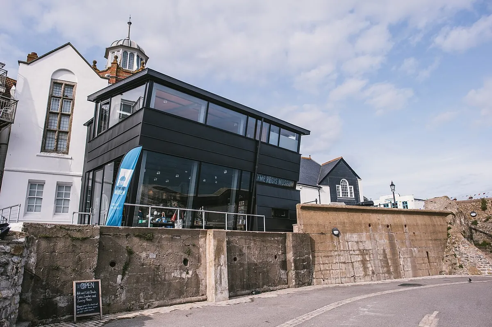
Photo: David Tucker LM, CC BY-SA 4.0 Lyme Regis Museum
Built on the site of Mary Anning’s home and fossil shop: fossils, the sea and the town’s own story. Its guided fossil walks on the beaches below Black Ven are booked well ahead.
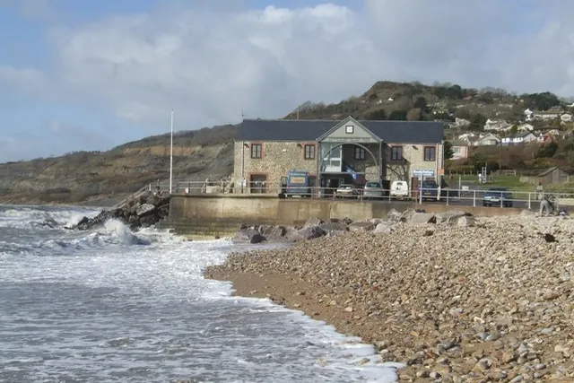
Photo: John M, CC BY-SA 2.0 Charmouth Heritage Coast Centre
A free fossil and Jurassic Coast centre on the beachfront, whose wardens lead fossil walks on the beach. You keep what you find.
Free
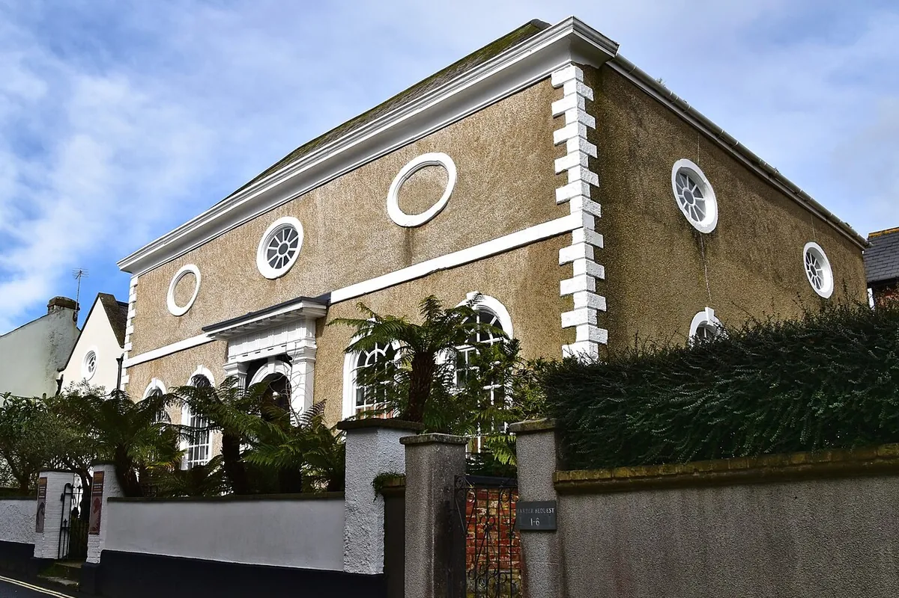
Photo: Ashley Smith, CC BY-SA 4.0 Dinosaurland Fossil Museum
An independent fossil museum, more than 30,000 specimens strong, in the church where Mary Anning was baptised.
February half-term to the end of October
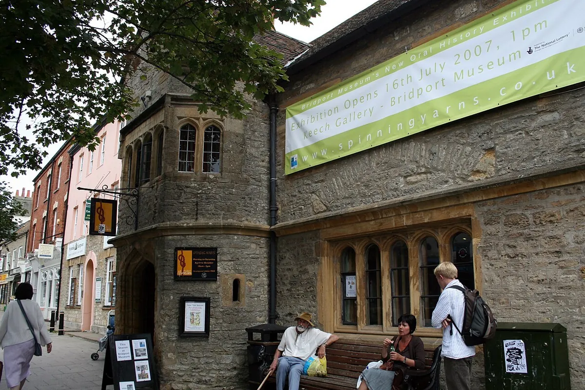
Photo: Jo and Steve Turner, CC BY-SA 2.0 Bridport Museum
The town’s story, with a rope and netting collection like no other and ropemaking demonstrations at set times.
Photo: Rodw, Public domain Royal Navy Museums: Naval Aviation
The museum that was the Fleet Air Arm Museum: more than ninety aircraft, among them the first British-built Concorde, and an aircraft-carrier experience.
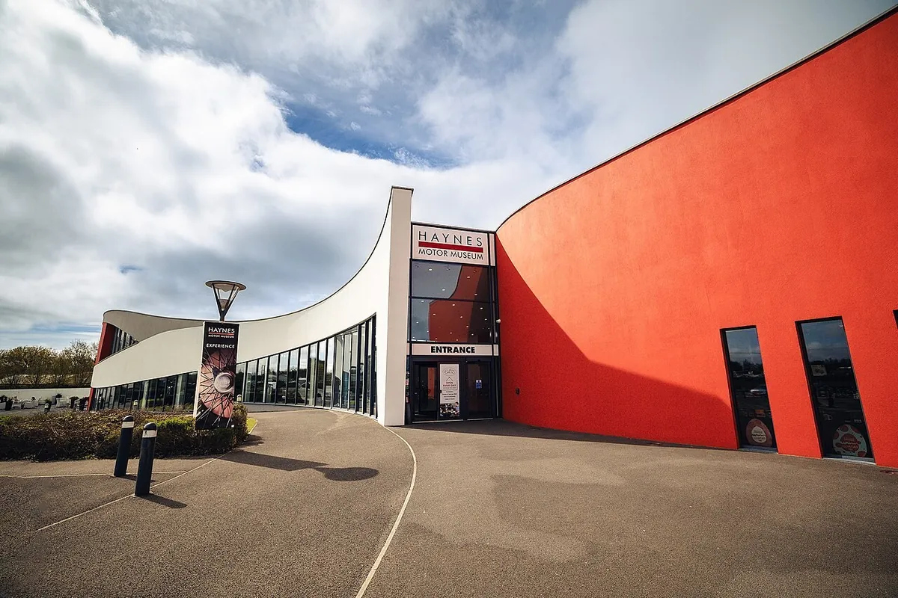
Photo: JorgeMiguel17, CC0 Haynes Motor Museum
More than three hundred cars and motorcycles, by its own count the largest collection in the country.
Houses and gardens
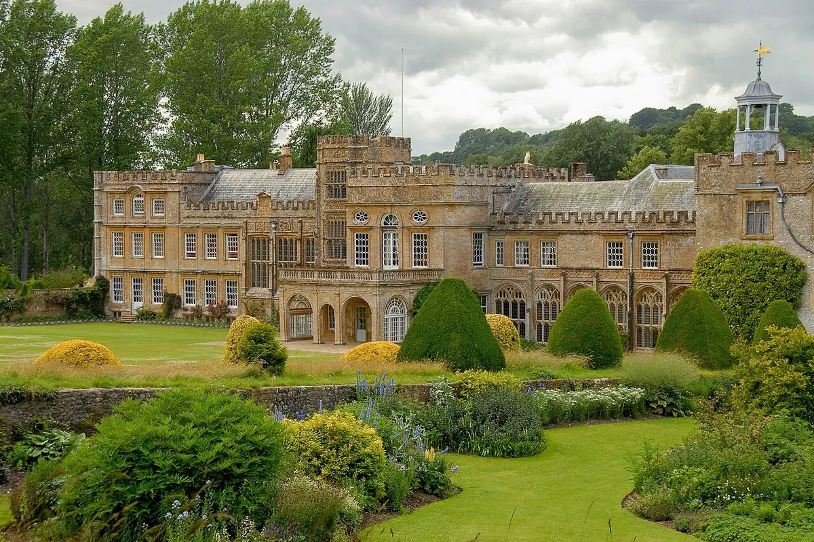
Photo: Henry Kellner, CC BY-SA 3.0 Forde Abbey & Gardens
Nine centuries of monastic and family history and thirty acres of award-winning gardens, three miles from the woods.
Gardens March to October; the house April to October
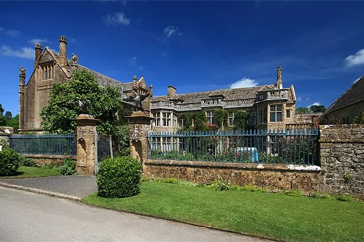
Photo: Mike Searle, CC BY-SA 2.0 Mapperton
An estate first recorded in the Domesday Book and still a family home, with house tours and celebrated gardens.
March to October
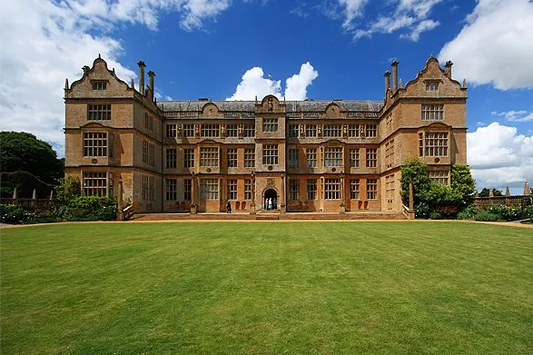
Photo: Mike Searle, CC BY-SA 2.0 Montacute House
An Elizabethan masterpiece, finished in 1601, with a rare Elizabethan garden. Its upper floors are closed for restoration until 2027.
National Trust
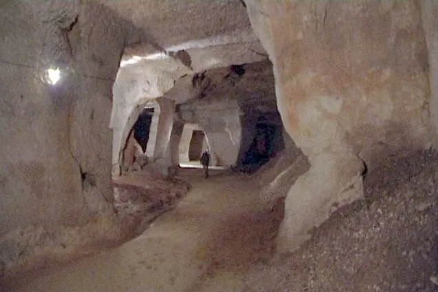
Photo: John Scott, CC BY-SA 2.0 Beer Quarry Caves
Guided tours of caverns quarried by hand for two thousand years.
Until the end of October
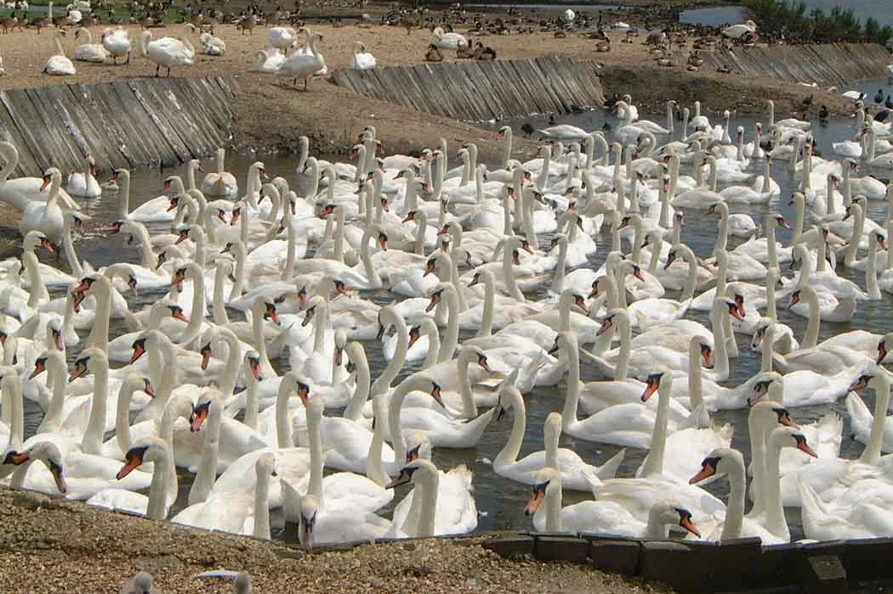
Photo: Mick Knapton at en.wikipedia, CC BY-SA 3.0 Abbotsbury Swannery and Gardens
The world’s only managed colony of nesting mute swans, begun by Benedictine monks, with the subtropical gardens next door.
The coast
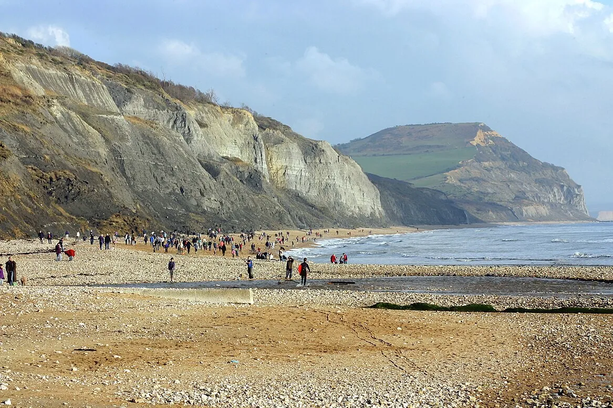
Photo: Kevin Walsh, CC BY 2.0 Golden Cap
The highest point on the south coast, an hour there and back through the woods and up from the National Trust car park at Langdon Hill.
National Trust
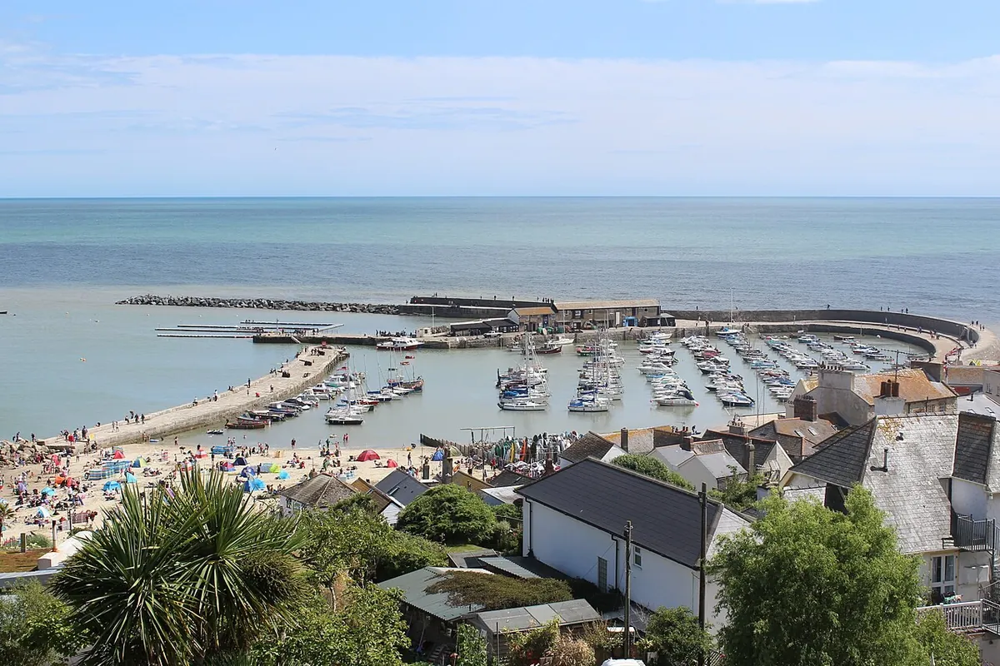
Photo: Martinvl, CC BY-SA 4.0 The Cobb and boat trips
Lyme’s ancient harbour wall, from Persuasion and The French Lieutenant’s Woman, with sightseeing and mackerel trips from the harbour.
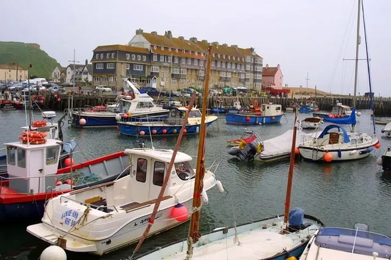
Photo: Steve Daniels, CC BY-SA 2.0 West Bay
The harbour and golden cliffs of Broadchurch, with a free Jurassic Coast discovery centre in a former chapel. Keep away from the foot of the cliffs.
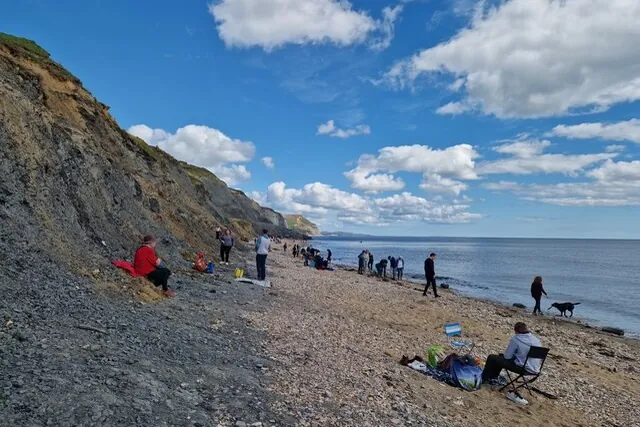
Photo: Basher Eyre, CC BY-SA 2.0 Guided fossil walks
Low tide after a winter storm is the best fossil hunting of the year. The wardens at Charmouth and the Lyme Regis Museum lead walks on the beaches; book ahead, as they sell out.
With children
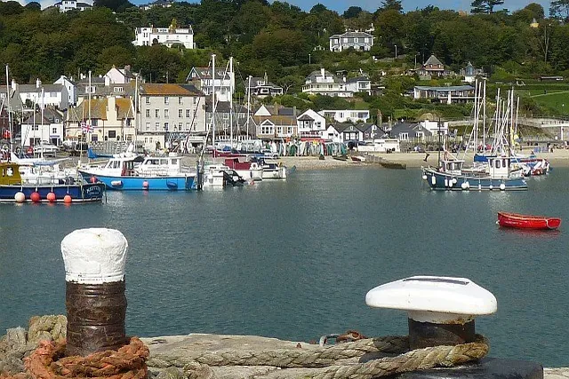
Photo: Robin Drayton, CC BY-SA 2.0 Lyme Regis Marine Aquarium
Creatures from the seashore and Lyme Bay, at the end of the Cobb: feed the mullet by hand and hold a starfish.
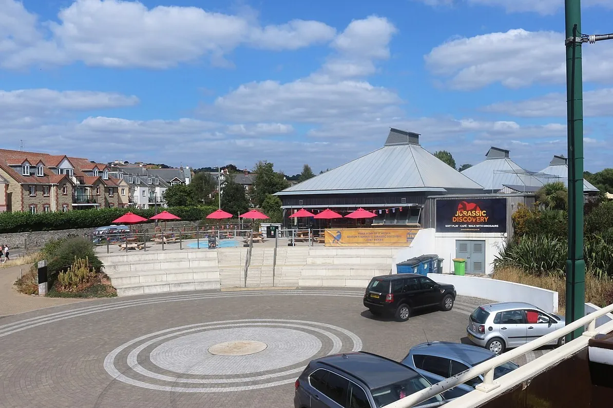
Photo: Des Blenkinsopp, CC BY-SA 2.0 Jurassic Discovery
Life-size moving dinosaurs, a fossil dig and dinosaur soft play.
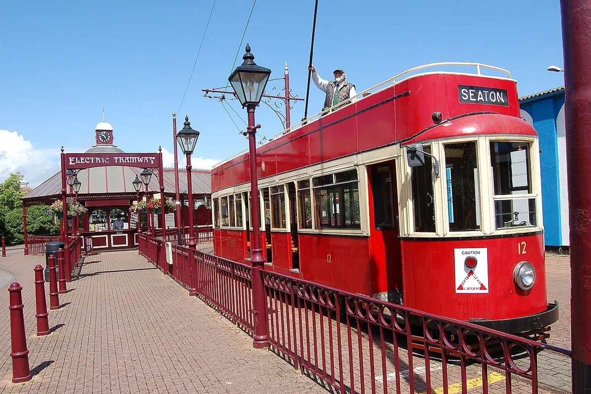
Photo: Wusel007, CC BY-SA 3.0 Seaton Tramway
Trams up the Axe valley from Seaton to Colyton, stopping at the wetlands on the way.
Or stay in
A hot tub on every deck, a swing for two, the pizza oven, and a sky with no town light in it, all without leaving the wood.